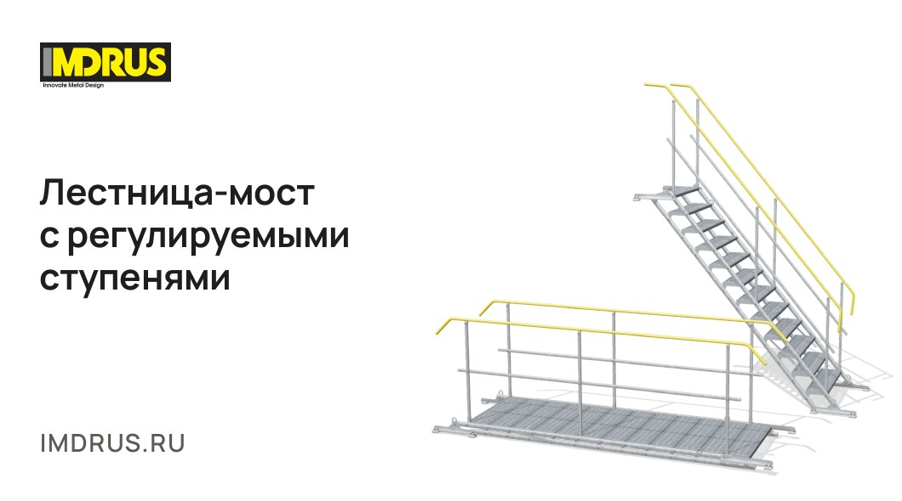
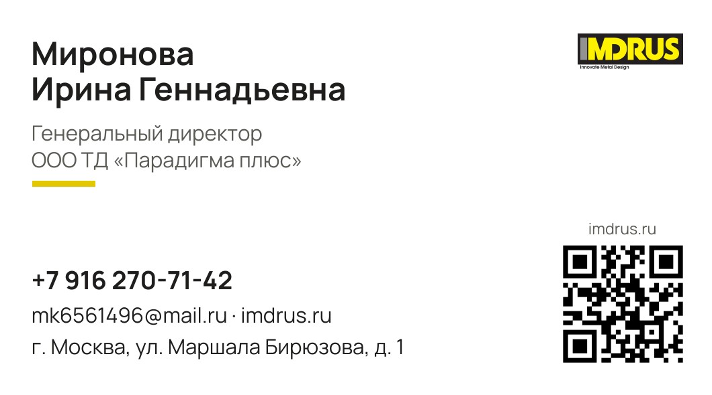

IMDRUS · макет для печати
Нажмите «Скачать PDF» и отправьте файл в типографию. Картинки сторон — запасной вариант, если типография просит JPG.


Формат 90×50 мм, вылеты по 2 мм с каждой стороны (файл 94×54 мм). Двусторонняя печать, тираж 100 шт.